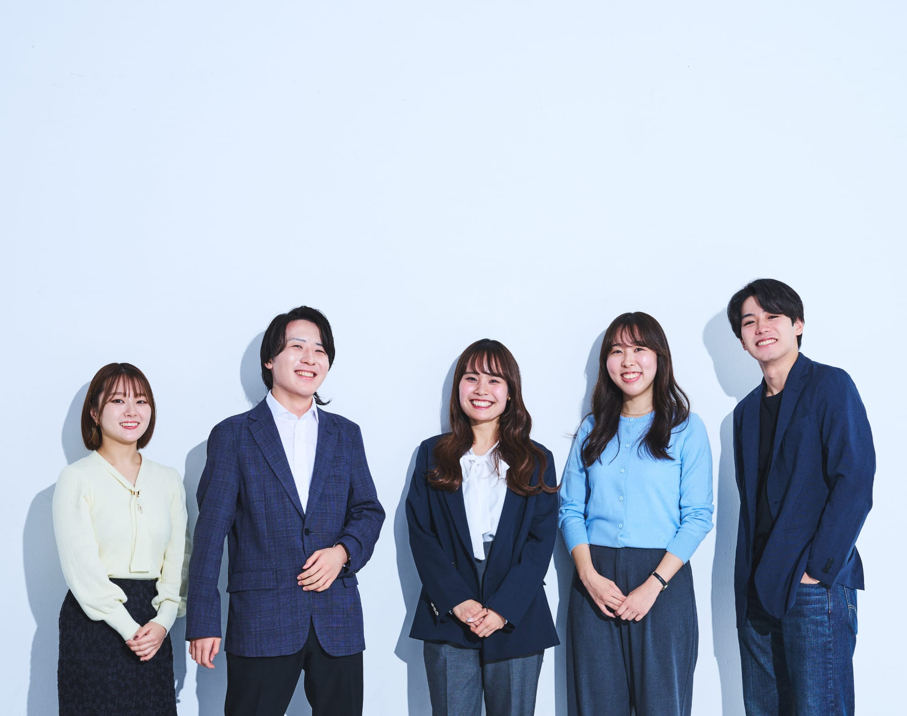
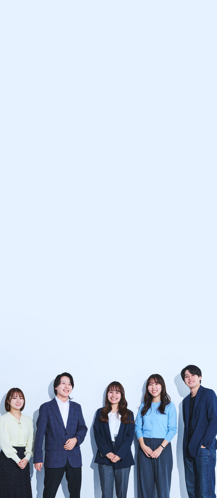
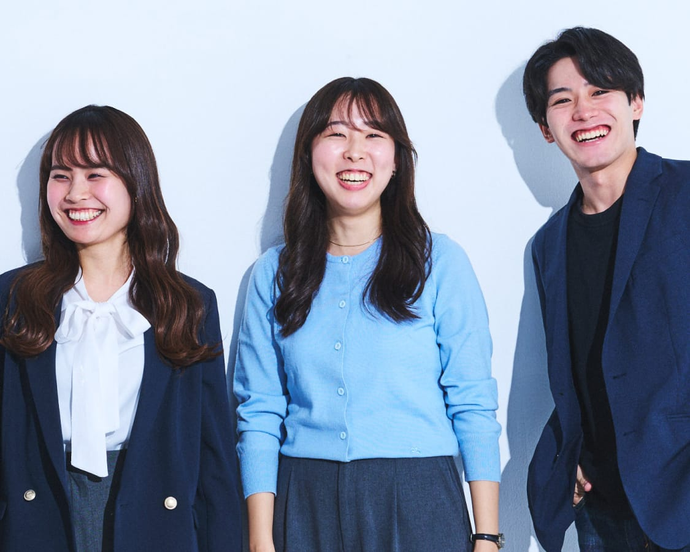
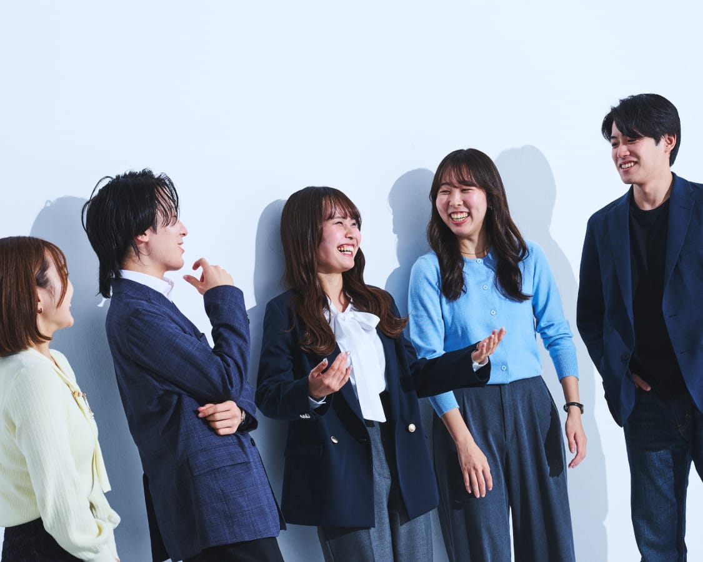
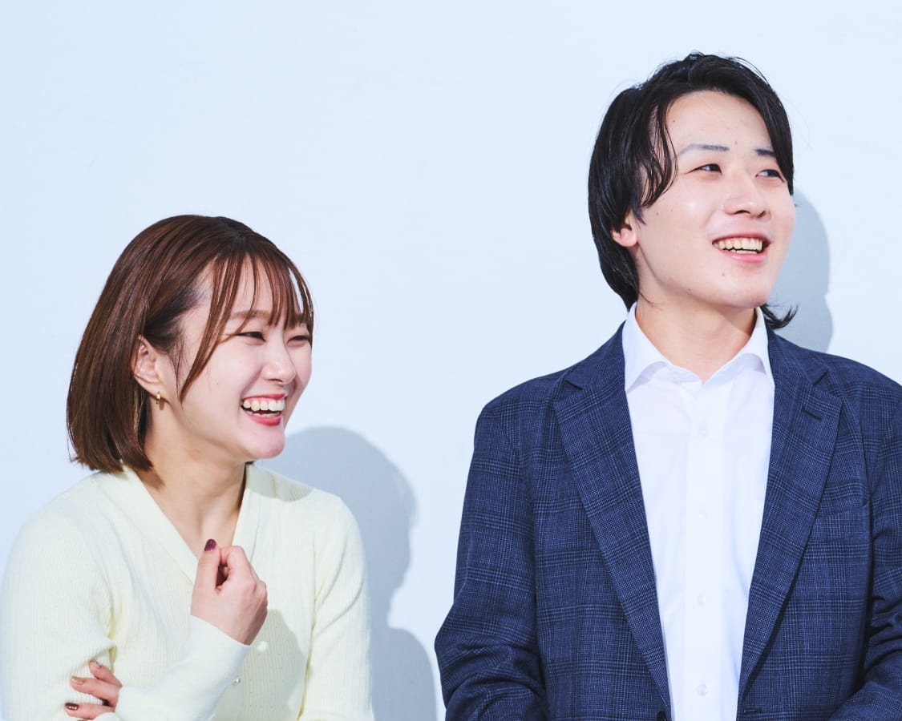
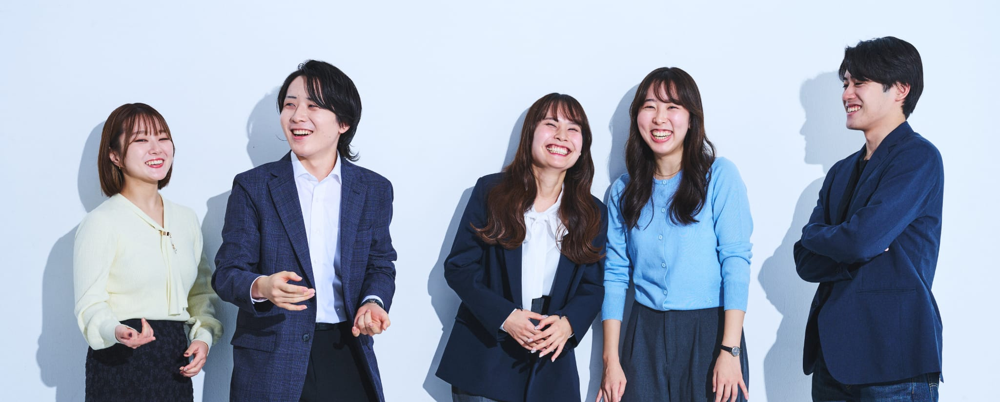
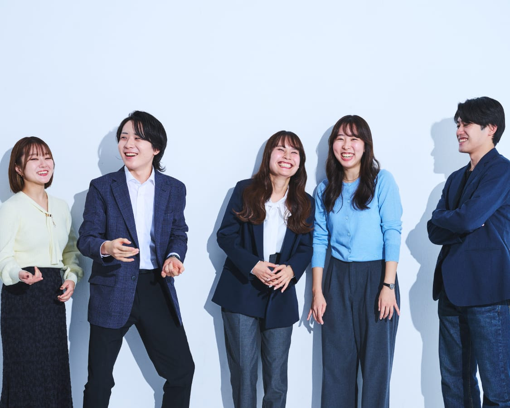

NEW
FACE'S
TALK
新卒座談会
実は聞きたかった！
就活当時のギモン
わからないこと、知らないことがたくさんある就職活動。
「何でも質問してください」と言われても、躊躇してしまうことだってあるはず。
そこで、新入社員の5人が自分たちの就活を振り返り、実は聞きたかったギモンについてお答えします。
※所属・仕事内容は取材当時
MEMBER
01 . 綾香のギモン
東映作品の
ファンじゃないと
ダメですか？
RINKA
RINKA
私は東映作品をたくさん見てきたわけじゃなかったから、選考を受ける上でこれが不安だったんだ。でも就活のために東映作品を見て、「ファンです」ってアピールするのもちょっと違うと感じていたんだよね。みんなはどうだった？
HARUKI
僕も映画は好きだけど、東映作品かどうかはあまり意識してこなかった。だから印象に残っている作品の中にあった東映作品を題材に、エンタメ業界を志した理由をアピールしたよ。
MACHI
私も映画は見るけれど、これと限定して好きな作品は多くなかったんだよね。それよりも「ものがたり」を長く楽しみたいと思っていて、エンタメの魅力を伝える仕事がすごくやりたかった。だから東映作品そのものより、東映ならいろんな商材を通して宣伝の仕事ができることが志望動機だったよ。
HIROKI
面接の中で東映作品について聞かれることもあったけど、僕の場合はある作中で使われているVFXについて熱く語った。思い返すと、どれだけ東映のファンであるか、知識が豊富かよりも、東映ファンの心を自分だったらどう掴むのかが大事だと思っているので、そこを話せたことが、よかったのかなと感じてるよ。
MEGUMI
私もそう思うな。みんなに共通しているのは「エンタメが好き」な気持ち。それが東映作品や映画じゃなくても、問題ないと感じたよ。一番大切なのは、東映で何がやりたいかを伝えることじゃないかな。
HARUKI
東映の事業もすごく幅広いしね。映像作品はもちろんだけど、イベントやショーもあれば、撮影所の運営もあるし。「エンタメが好き」というのは大事なポイントかもしれないね。
HIROKI
それに、東映作品の知識は入社後につけることもできるから。
東映で何がやりたいか、
自分なりに伝えることが大切。

02 . 宙生のギモン
多忙な業界の
イメージがありますが、
実際どうですか？
HIROKI
HIROKI
エンタメ業界って忙しいイメージがあるよね。就活当時も東映が働き方の改善に力を入れていることは知っていたけど、実際のところどうなのか、みんなに聞いてみたいな。
MEGUMI
部署によって結構違うのかな。真智のいる宣伝部って特にハードなイメージがあるよ。
MACHI
配属が決まったとき、実は覚悟してたけど、かなり働き方が改善されて、思った以上にプライベートも充実してる。昨日も仕事終わりにネイルに行ったよ。ただ担当する作品の公開日が近づいてきたり、プロジェクトによっては、不規則になることもあるみたい。
RINKA
私は撮影の都合上、どうしても土日出勤が必要なときはあるよ。でもチームで分担したり、振替休日や代休を取ったり、ちゃんと休みも取れているな。
MEGUMI
社会人って、平日は帰って寝るだけのイメージじゃなかった？でも全然そうじゃなくて、意外と自分の時間を持てているよね。
HARUKI
僕も舞台挨拶やイベントがある関係で土日出勤や残業はあるものの、その分平日に休んだり、フレックスタイムで出勤を遅くしたりできるから、バランスが取れてる。あと僕は飲み会が大好きで（笑）週3〜4回飲みにいくこともあるくらい。
HIROKI
それは行きたくない人は行かなくてもいいの？
HARUKI
もちろん！ほとんど来ない人もいれば、一滴も飲まない人もいる。本当に自由だよ。
HIROKI
今日のメンバーはみんな良いバランスで働いているんだね。僕自身も残業時間がほとんどない分、自分の時間が多く持てていて、自主創作に充てているよ。先輩たちも在宅勤務をしてたり、有休も取ったりできてる。ただ現実として、どうしても残業が多くなってしまう部署もあるみたい。一概に全部署で余裕があるわけはないから、もっと改善しないといけないのも事実だよね。
働き方、
アップデート中！

03 . 萌のギモン
入社から
配属までのプロセスを
教えてください。
MEGUMI
MEGUMI
総合職あるあるかもしれないけど、入社するまで自分の配属がわからないことに、内定をもらってからもソワソワドキドキしていたからギモンとして持ってきたよ。
RINKA
そうなんだよね〜！ずっとドキドキだった。
HARUKI
僕たちの場合、配属が決まるまでのステップは、まず2ヶ月間の新入社員研修を受けたかな。研修修了後、1ヶ月間の仮配属を経て、本配属だったね。
MACHI
研修では企業理解や社会人マナー・スキルの基礎を教わったね。あとは撮影所、支社訪問もさせてもらって。
HARUKI
結束を高める目的でゲームもしたね。あれでみんなと仲良くなれたよね。
HIROKI
なったね。それと研修の終盤でキャリアプランを考えるワークがあって、キャリアの考え方のレクチャーを受けた後、自分がこれからどうなりたいかを考えて書き出したっけ。
MEGUMI
研修の最後の方は、自分たちの配属先がどうなるかで持ちきりだったよね（笑）
HIROKI
結果的に全員が希望の部署に行けたわけじゃないし、希望通りにいかなかったときはショックだと思うけど、東映は初期配属がすべてではない。自分のやりたいことに向けて、プラスの経験を得る機会と考えられればいいのかな。
MACHI
本当にそう。初期配属で希望が叶ったとしても、ずっと一つの部署にいるわけではないから。
RINKA
どこに配属になったとしても、絶対に学びはあるし、自分次第でいくらでも楽しめる！あんなにドキドキした初期配属だったけど、今はそう感じているよ。
配属までに、自分のキャリアに
向き合う機会が充実。

04 . 春樹のギモン
1年目って、
どんな仕事を
していますか？
HARUKI
HARUKI
若手のうちからアイデアや意見を発信するチャンスはあるのか、先輩との関係はどんなものなのかを知りたかったから、このギモンを選んだよ。
MEGUMI
春樹はどんな仕事をしているの？
HARUKI
仕事の幅は本当に広いけど、企画に関わる部署なのもあって、アイデアを求められる場面はすごく多いよ。経験は少ないながらも、等身大の自分が感じることを率直に伝えてる。
MACHI
映画宣伝部の仕事も近いかな。覚えることだらけだけど、できることから任せてもらっているよ。最近だとSNSでキャストがダンスをする企画があるんだけど、その振り付け動画のサンプルを踊るとか、20代ならではの感性やアイデアを大事にしてもらっている。
HIROKI
経営戦略部は少し雰囲気が違うかな。メインの仕事内容が会長や社長が一堂に会する取締役会の運営だから、新人のアイデアをどんどん起用するという場面はあまりないかも。
MACHI
人生の先輩だらけだ。
HIROKI
その中でも、株主優待に関するアイデア出しに参加させてもらったり、業務を一つひとつ覚えていけるようにサポートしてもらったり、人に恵まれているなっていうのはすごく感じるよ。
MEGUMI
国際営業部は私が数年ぶりの新人で、新しい意見を取り入れようという空気があるよ。皆さん本当にやさしくて、質問をするとすぐ手を止めて教えてくださるような環境。
RINKA
私も質問をすると「いい視点だね」って褒めてくれるほど、すごくサポートしてもらっているよ。東京撮影所スタジオ営業部は、外部作品も扱う部署だから、社外の人と接することが圧倒的に多いのは、みんなと違うところかな。自分の視野がどんどん広がっていくおもしろさがあるよ。
HIROKI
どの部署も共通しているのは、新人を大切に想ってくれていることだね。
先輩たちのサポートを受けながら、
それぞれにチャレンジ。


05 . 真智のギモン
憧れや
お手本に
している先輩は
いますか？
MACHI
MACHI
東映にはたくさんのすごい先輩がいる中で、若手から見た憧れの先輩ってどんな人たちなのか気になっていたよ。私たち宣伝部は社内外問わずたくさんの人と接するから、立ち振る舞いの丁寧さや調整力をすごく求められる。だからその調整力を持っている人に憧れていて、私もそうなりたいって思ってるんだ。
HARUKI
調整力といえば、僕の憧れる先輩も、営業としての知見を持って他部署と対等に渡り合っているのがすごい。誰よりも劇場側やお客さまの視点に立ってはっきりと意見する姿は、本当にかっこいいよ。
HIROKI
僕が尊敬している先輩は、一方的に指導するのではなく、背中も見せてくれる人。僕に対して「今ある仕組みの中で変えた方がいいと思うことがあったら、自分で改善していいから」と言ってくださるし、先輩自身も実際に改善案を上長に提案するなどして、チーム全体に流れを作ってくれている。自分が先輩になったら、こんな風になりたいなって思うよ。
RINKA
私がすごいと感じる方に共通しているのは、自分を強く持っていること。自分の叶えたい想いを熱く語れて、行動もしている。だからかな、すごくお一人おひとりのキャラクターが魅力的なんだよね。自分も早くそうなりたいなって、常日頃思っているよ。
MEGUMI
色々ありすぎて…うまくまとまらないんだけど、自分のやりたいことと他者への気配りが両立できる人に憧れるな。自分の軸を持って叶えたいことを追い求めながらも、部署としての目標も意識する。その結果、両方を叶えられるような。
MACHI
みんなの話を聞いて思ったのは、東映の先輩ってそれぞれが個性的だよね。それを受け入れ合って支え合って、東映という会社を形作っている。そこがまた魅力だなって思ったよ。
たくさんの魅力的な
先輩に出会える！

